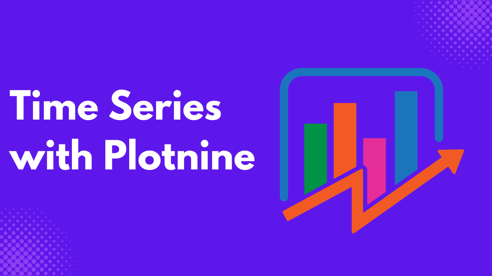
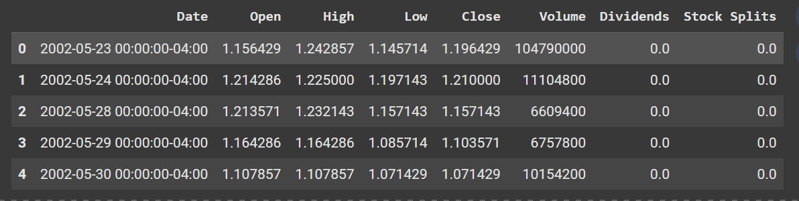

When you have data with observations in subsequent time intervals, such as hourly, daily, weekly, or yearly.
Visualizing such data enables you to identify trends and seasonality over time and forecast future values.
In this article, you will learn how to use Python Plotnine, a Python library based on ggplot2 that allows you to build plots based on the grammar of graphics.
Prerequisites
- Google Colab, Jupyter Notebook, or Positron installed
- The following libraries were installed:
scikit-misc- Miscellaneous scientific algorithmsnumpy- Numerical computingpandas- Data Analysisplotnine- Data visualization based on the grammar of graphics
Preparing the Data
Before you proceed, you need to download and prepare the data for the time series visualization. In this tutorial, you will make use of the daily Netflix stock price data from the year 2000 to date.
First of all, import the following libraries
import scikit_misc
import pandas as pd
import numpy as np
from datetime import datetime, timedelta
from plotnine import (
ggplot, aes, geom_line, geom_point, geom_smooth,
labs, theme_minimal, theme, scale_x_datetime,
element_text, element_blank
)Import the data.
df = pd.read_csv('/content/Netflix_stock_history.csv')
df.head()
Ensure the Date column is in datetime format.
df['Date'] = pd.to_datetime(df['Date'], utc=True)You can resample the data to any preferred frequency; either weekly, monthly, or yearly.
For weekly frequency,
# Weekly aggregation
df_weekly = df.set_index('Date').groupby([pd.Grouper(freq='W')]).agg({
'Close': 'mean'
}).reset_index()
df_weekly.head()
For monthly,
# Monthly aggregation
df_monthly = df.set_index('Date').groupby([pd.Grouper(freq='M')]).agg({
'Close': 'mean'
}).reset_index()
df_monthly.head()
For yearly,
# Yearly aggregation
df_yearly = df.set_index('Date').groupby([pd.Grouper(freq='Y')]).agg({
'Close': 'mean'
}).reset_index()
df_yearly.head()
Creating a Basic Time Series Plot
If you have used ggplot2 , you should not find it difficult to grasp plotnine. They both work using the same principle: The Grammar of Graphics.
The grammar of graphics works by adding layers to elements to build a plot.
Here is a basic example using our data to plot a line plot.
basic_plot = (
ggplot(df) +
aes(x='Date', y='Close') +
geom_line()
)
basic_plot
First of all, you specify your dataset inside the ggplot() function, then add the axis in the aes() function to it, then finally the geom_line() function to create a line plot.
All these are layers, and you can add more to your plot using the + sign.
styled_plot = (
ggplot(df) +
aes(x='Date', y='Close') +
geom_line(color='steelblue', size=1.2, linetype='solid')
)
styled_plotThe geom_line() has arguments where you can specify the color, size, and linetype of your plot.

Enhancing the Plot
If your dataset has multiple categories, you can add it to the color argument in the aes() function.
Though, we don’t have a category in our dataset, we will make do of the closing prices as a category for demonstration purposes.
multi_category_plot = (
ggplot(df) +
aes(x='Date', y='Close', color='Close') +
geom_line(size=1)
)
multi_category_plot
You can use the labs() function to add titles and axes labels to your plots.
enhanced_plot = (
ggplot(df) +
aes(x='Date', y='Close', color='Close') +
geom_line(size=1.2) +
labs(
title='Time Series Analysis with Plotnine',
subtitle='Netflix closing values from 2020-Date with trend and seasonality',
x='Date',
y='Close',
color='Close'
)
)
enhanced_plot
You can also add a smoothing line to show the trend on the plot.
advanced_plot = (
ggplot(df) +
aes(x='Date', y='Close', color='Close') +
geom_line(alpha=0.6, size=0.8) + # Semi-transparent lines
geom_smooth(method='loess', se=True, alpha=0.2) + # Smoothing with confidence interval
labs(
title='Advanced Time Series with Trend Lines',
subtitle='Original data with LOESS smoothing and confidence intervals',
x='Date',
y='Close',
color='Close'
) +
theme_minimal() +
theme(
panel_grid_minor=element_blank(), # Remove minor grid lines
legend_position='bottom',
plot_title=element_text(size=14, face='bold')
)
)
advanced_plot
Conclusion
Unlike other Python visualization libraries, plotnine brings an elegant way of building visualizations using the grammar of graphics, where you build visualizations layer upon layers. You first of all prepare your data, then your plot, then you customize, and finally, enhance your plot.
You can go beyond this and explore various other types of visualizations in plotnine, and also further way to customize your plot.
Need Help with Data? Let’s Make It Simple.
At LearnData.xyz, we’re here to help you solve tough data challenges and make sense of your numbers. Whether you need custom data science solutions or hands-on training to upskill your team, we’ve got your back.
📧 Shoot us an email at admin@learndata.xyz—let’s chat about how we can help you make smarter decisions with your data.